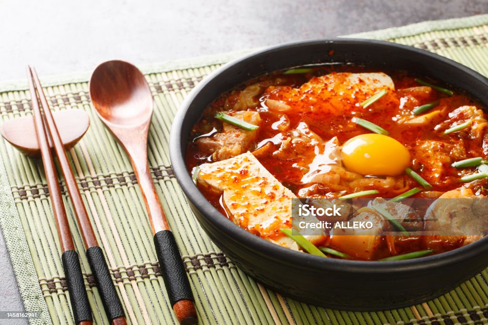

Sundubu Jigae

Description
Sundubu jjigae is a Korean stew made with soft (uncurdled) tofu as a highlight ingredient.
In general, sundubu jjigae is a bit spicy though I think my recipe is in the modest pepper scale.
Nevertheless, the spiciness of the stew can vary depending on the types of chili powder / chili
flakes you use. Also, whether you used chili oil or neutral oil. A spicier version can potentially
make you sneeze while you’re cooking and may even tickle your throat.
Main Ingredients
350g/12 ounces Korean soft tofu (sundubu)
110g/3.9 ounces littleneck clams or pipis, cleaned
3-4 banana prawns (80g/2.8 ounces), head, shells and guts removed
100g/3.5 ounces enoki mushrooms, bottom 4-5 cm stem removed and rinsed briefly in cold running water
2 small shiitake mushrooms (20g/ 0.7 ounces), cleaned, stem removed and thinly sliced
1 egg
1 stalk of green onion (10g/0.4 ounces), thinly sliced
Soup Base
1.5 cups dried kelp and anchovy stock
1 Tbsp Korean chili oil or neutral cooking oil
2 Tbsp Korean chili powder or Korean chili flakes (gochugaru)
1 tsp minced garlic
1/2 Tbsp Korean fish sauce
1/2 Tbsp Korean soup soy sauce or regular kikkoman soy sauce
fine sea salt, to taste
A few sprinkles of ground black pepper
A dash (about 1/2 tsp) of sesame oil
Home